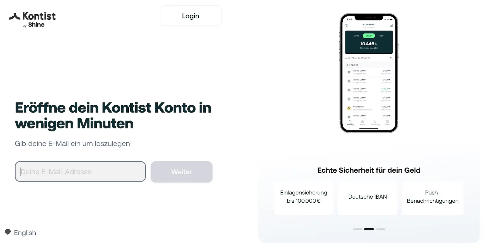

Das Wichtigste: Kontist Geschäftskonto
- Free ab 0 €: 5 SEPA-Transaktionen inklusive; Start kostet 11 € und Plus 25 € pro Monat zzgl. USt.
- Steuerfokus: automatische Steuerberechnung und Steuerschätzung direkt im Konto für Selbstständige.
- Einlagensicherung: Kontoführung über Solaris SE mit gesetzlichem Schutz bis 100.000 € pro Einleger.
- Bargeld: Echtzeit-Einzahlungen sind möglich; nach der ersten Einzahlung fallen 2,9 % an.
- Zielgruppen: Freiberufler, Kleinunternehmer sowie viele kleine Kapital- und Personengesellschaften.
- Buchhaltung: DATEV-nahe Exporte, UStVA und BWA vor allem im Plus-Tarif.
Für wen ist Kontist geeignet — und für wen nicht?
Am besten passt Kontist zu Freelancern und Solo-Selbstständigen, die ihre Finanzen vollständig digital verwalten und die integrierte Steuerberechnung nutzen wollen. Wer Bargeld einzahlen muss oder komplexe Multi-User-Strukturen braucht, ist bei einem breiteren Geschäftskonto-Vergleich oft besser aufgehoben.
- Freelancer & Solo-Selbstständige — dauerhaft kostenloser Einstieg mit Steuerfokus
- Steuer-Neulinge — Steuerberechnung und Steuerschätzung direkt im Konto
- Wenig Transaktionsvolumen — kleines Setup mit 5 inkludierten SEPA-Buchungen
- Selbstständige mit Steuerfokus — Banking und Steuerorganisation in einer App
- Bargeldintensive Betriebe — keine klassische Filial- oder Schalterlogik
- Internationale Überweisungen — kein SWIFT- oder Fremdwährungskonto
- Teams & mehrere Nutzer — wenig Teamfunktionen und nur begrenzte Kartenlogik
- Viele Buchungen im Free-Tarif — nur 5 Transaktionen inklusive
Kontist Geschäftskonto: Rechtsformen
Kontist eröffnet Geschäftskonten für Freelancer, Small business-owners, GmbH, UG, GbR sowie für Unternehmen in Gründung. Für die Eröffnung werden als Basisset ein gültiger Ausweis, ein Smartphone für die Video-Verifizierung und die wichtigsten Unternehmensdaten benötigt.
| Rechtsformen | Status | Unterlagen / Hinweis |
|---|---|---|
| Freelancer, Selbstständige, Kleinunternehmer | Möglich |
|
| GmbH, UG, GbR | Möglich |
|
| Unternehmen in Gründung | Möglich |
|
Kontist Geschäftskonto: Kosten & Konditionen
Die folgende Tabelle zeigt die wichtigsten Gebühren für Kontist Free, Start und Plus im direkten Vergleich. Alle Angaben basieren auf der offiziellen Kontist-Preisseite sowie dem aktuellen Pricing PDF, Stand 29. Mai 2026.
| Leistung | FREE | START | PLUS |
|---|---|---|---|
| Für wen geeignet? | Selbstständige mit wenigen monatlichen Zahlungen | Selbstständige mit mehr Transaktionen und Unterkonten-Bedarf | Anspruchsvollere Setups mit Buchhaltungs- und Steuerworkflow |
| Monatliche Grundgebühr | 0 € / Monat | 11 € / Monat zzgl. MwSt. | 25 € / Monat zzgl. MwSt. |
| Kostenlose SEPA-Buchungen | 5 / Monat | 30 / Monat | 100 / Monat |
| Mehrkosten je Buchung | 0,25 € | 0,25 € | 0,25 € |
| SEPA Echtzeitüberweisung | Wie SEPA | Wie SEPA | Wie SEPA |
| Virtuelle Visa-Debitkarte | Optional Je nach Tarif / Zusatzoption |
Inklusive | Inklusive |
| Physische Visa-Debitkarte | Inklusive | Inklusive | Inklusive |
| Bargeldabhebung | Gebührenpflichtig | 2x inklusive Danach tarifabhängig |
4x inklusive Danach tarifabhängig |
| Bargeldeinzahlung | Echtzeit-Einzahlung erste kostenlos, danach 2,9 % |
Echtzeit-Einzahlung erste kostenlos, danach 2,9 % |
Echtzeit-Einzahlung erste kostenlos, danach 2,9 % |
| Fremdwährungsgebühr | 2,0 % | 1,75 % | 1,5 % |
| Unterkonten | Nicht inklusive | 3x inklusive | 5x inklusive |
| Echtzeit-Steuerberechnung | Inklusive | Inklusive | Inklusive |
| Rechnungstool / Rechnungsfunktionen | Inklusive | Inklusive | Inklusive |
| Belegverwaltung | Inklusive | Inklusive | Inklusive |
| DATEV-nahe Exporte | Nicht ausgewiesen | Nicht ausgewiesen | Inklusive |
| USt-Voranmeldung | Nicht ausgewiesen | Nicht ausgewiesen | Inklusive |
| BWA (Betriebswirtschaftliche Auswertung) | Nicht ausgewiesen | Nicht ausgewiesen | Inklusive |
| Dispokredit (optional) | Bis 3.000 € für Einzelunternehmen |
Bis 3.000 € | Bis 3.000 € |
| Geschäftskredit (Froda) | Bis zu 50.000 € Partnerangebot |
Bis zu 50.000 € Partnerangebot |
Bis zu 50.000 € Partnerangebot |
| Apple Pay / Google Pay | Ja | Ja | Ja |
| Einlagensicherung | 100.000 € gesetzlich pro Einleger über Solaris SE | ||
| Konto eröffnen | Free → | Start → | Plus → |
Alle Angaben zzgl. gesetzlicher MwSt. Stand: 29. Mai 2026. Konditionen ohne Gewähr — bitte auf kontist.com verifizieren.
Kontist Geschäftskonto: Vor- und Nachteile
Kontist hat ein klar erkennbares Profil für Selbstständige mit Steuerfokus, bleibt aber bei Bargeld, Team-Setups und einigen klassischen Bankfunktionen eingeschränkt.
- Automatische Steuerberechnung als klares Kernfeature
- Einstieg ab 0 EUR im Free-Tarif
- Physische Visa Karte inklusive
- SEPA Instant in allen Tarifen verfuegbar
- Auch fuer GmbH, UG und GbR grundsaetzlich offen
- Keine Bargeldeinzahlungen
- Nur 5 freie SEPA-Transaktionen im Free-Tarif
- DATEV erst in hoeheren Tarifen
- Kein SWIFT oder Fremdwährungskonto
- Kein Gruendungskonto fuer die Stammkapitaleinzahlung
Funktionen & Features im Detail
Der auffälligste Unterschied zu vielen Wettbewerbern ist bei Kontist die enge Verknüpfung von Konto, Steuerberechnung und Buchhaltungsbausteinen. Damit deckt Kontist die wichtigsten Zahlungsverkehrs- und Organisationsfunktionen für Selbstständige ab.
Automatische Steuerberechnung als zentrales Produktmerkmal
Die automatische Steuerberechnung ist das zentrale Produktmerkmal von Kontist. Bei Zahlungseingängen zeigt die App direkt an, welcher Betrag typischerweise für Steuerzwecke zurückgelegt werden sollte.
- Umsatzsteuerquote: Basierend auf Ihrem eingestellten USt-Satz (19 % / 7 % / Kleinunternehmer) legt Kontist automatisch den entsprechenden Betrag zurück.
- Einkommensteuerquote: Auf Basis Ihres Vorjahreseinkommens und einer hinterlegten Steuerquote schätzt Kontist Ihren laufenden Einkommensteuerbedarf.
- Steuer-Topf: Die zurückgelegten Beträge wandern automatisch in ein separates Unterkonto (Steuer-Topf) — Sie sehen jederzeit, wie viel Sie wirklich frei verfügen können.
- Fristen-Erinnerungen: Kontist erinnert Sie an USt-Voranmeldungs- und Steuerzahlungsfristen (im Plus-Tarif mit direkter Voranmeldung verknüpft).
Im Free- und Start-Tarif arbeitet Kontist vor allem mit Steuerschätzungen. Im Plus-Tarif kommen weitergehende Steuer- und Buchhaltungsfunktionen hinzu; einzelne davon sind ausdrücklich auf Einzelunternehmen zugeschnitten.
Zahlungsverkehr
Kontist eignet sich primär für nationale oder SEPA-Zahlungen. SEPA-Überweisungen, Lastschrifteinzug, Daueraufträge und SEPA Instant Payments sind in allen Tarifen Standard; SWIFT-Auslandsüberweisungen in Fremdwährungen sind dagegen nicht möglich.
Unterkonten & Rechnungsstellung
Unterkonten gibt es bei Kontist erst ab dem Start-Tarif. Dort sind 3 Konten vorgesehen, im Plus-Tarif 5; auch Rechnungs-, Beleg- und Exportfunktionen unterscheiden sich je nach Tarif im Umfang.
Kontist Geschäftskonto: Karten
Kontist setzt ausschließlich auf Visa Business Debitkarten. Eine physische Karte ist in allen Tarifen enthalten, virtuelle Karten sind je nach Tarif beziehungsweise Zusatzoption verfügbar; eine klassische Kreditkarte mit Zahlungsziel gibt es nicht.
| Karte | Typ | Kosten | Besonderheiten |
|---|---|---|---|
| Virtuelle Visa | Debitkarte sofort verfügbar |
Je nach Tarif / Zusatzoption | Online-Zahlungen, Apple Pay & Google Pay |
| Physische Visa | Debitkarte | Inklusive | Weltweit nutzbar, Abhebungen tarifabhängig |
| Ersatzkarte | Bei Verlust/Diebstahl | 10 € / Karte | Bestellung direkt in der App |
Kartenlimits
Kartenlimits lassen sich in der App steuern. Die Zahl physischer und virtueller Karten richtet sich nach dem Tarif; Start und Plus gehen dabei über den Free-Tarif hinaus.
Kontist Geschäftskonto: Bargeld & Abhebungen
Kontist bleibt beim Bargeld deutlich digitaler als klassische Geschäftsbanken. Möglich sind Kartenabhebungen und eine begrenzte Echtzeit-Einzahlung, aber keine klassische Filiallogik.
| Leistung | FREE | START | PLUS |
|---|---|---|---|
| Bargeldabhebung | gebührenpflichtig | 2x inklusive danach tarifabhängig |
4x inklusive danach tarifabhängig |
| Bargeldeinzahlung | Echtzeit-Einzahlung erste kostenlos, danach 2,9 % |
Echtzeit-Einzahlung erste kostenlos, danach 2,9 % |
Echtzeit-Einzahlung erste kostenlos, danach 2,9 % |
| Monatslimit Einzahlung | bis 2.000 € Mindestbetrag 50 € |
bis 2.000 € Mindestbetrag 50 € |
bis 2.000 € Mindestbetrag 50 € |
| Klassische Filialeinzahlung | nicht vorgesehen | nicht vorgesehen | nicht vorgesehen |
| Einordnung | nur begrenzt bargeldtauglich | für gelegentliche Nutzung ok | am brauchbarsten im Kontist-Modell |
Buchhaltung, DATEV & Softwareintegrationen
Kontist bündelt Banking und Buchhaltung in einer App. Der Funktionsumfang reicht von Belegverwaltung bis zu Export- und Steuerfunktionen, unterscheidet sich aber je nach Tarif und teils auch nach Rechtsform.
- DATEV-nahe Exporte: Im Plus-Tarif.
- USt-Voranmeldung: Im Plus-Tarif.
- Software-Schnittstellen: Je nach Tarif verfügbar.
- Belegverwaltung: Foto-Upload mit automatischem Transaktionsabgleich, alle Tarife.
- BWA: Im Plus-Tarif.
Einlagenschutz & Regulierung bei Kontist
Kontist selbst ist ein Fintech. Die Bankdienstleistungen und die Kontoführung laufen über die Solaris SE als reguliertes deutsches Kreditinstitut. Guthaben sind dort bis 100.000 € gesetzlich geschützt.
| Status | Fintech mit Solaris SE |
| Bankpartner / Aufsicht | Solaris SE, reguliertes deutsches Kreditinstitut |
| Gesetzliche Einlagensicherung | Bis 100.000 € pro Einleger über Solaris SE |
| Zusätzlicher Schutz | Kein zusätzlicher Schutz über Kontist selbst kommuniziert |
Kontist Konto eröffnen: So geht's
Die Kontoeröffnung bei Kontist läuft digital über die Antragsstrecke des Anbieters. Die deutsche IBAN steht nach erfolgreicher Eröffnung zur Verfügung; die genaue Dauer hängt von Rechtsform und Unterlagen ab.
- Tarif wählen: Auf kontist.com und Antragsstrecke starten
- Unternehmensdaten eingeben: je nach Rechtsform werden unterschiedliche Angaben und Unterlagen abgefragt
- Identifikation durchführen: Über den vorgesehenen digitalen Prüfprozess
- Konto freischalten: nach erfolgreicher Prüfung steht die IBAN bereit
- Karten und Zusatzfunktionen: Richten sich anschließend nach dem gewählten Tarif

Kontist Geschäftskonto Fazit 2026
Kurzfazit: besonders stark für Freelancer und Solo-Selbstständige mit Steuerfokus, schwächer bei Bargeld, Team-Setups, internationaleren Anforderungen und klassischer Banklogik.
Besonders lohnt sich das Kontist Geschäftskonto 2026 für Selbstständige, die Banking, Steuerberechnung und mobile Abläufe möglichst eng in einem Produkt bündeln möchten. Gerade für Ein-Personen-Businesses ist diese Spezialisierung ein echter Vorteil, wenn weniger manuelle Steuerplanung und ein klarer Überblick über verfügbare Mittel im Alltag wichtig sind.
Weniger passend ist Kontist für Unternehmen mit regelmäßigem Bargeldbedarf, mehreren Nutzern, höherem Bedarf an klassischen Bankleistungen oder einer Gründung mit Stammkapitaleinzahlung. Wer eher ein breiter aufgestelltes Geschäftskonto als eine fokussierte Selbstständigen-Lösung sucht, fährt mit Alternativen oft besser.
Nicht das Richtige? Diese Alternativen könnten passen
Alle drei Anbieter haben wir ebenfalls getestet — hier die wichtigsten Unterschiede auf einen Blick.
Naheliegend für Selbstständige, die Bargeldservices, Postbank-/Deutsche-Bank-Infrastruktur und klassischere Banklogik suchen.
✓ günstiger Einstieg für kleine Unternehmen
× weniger softwarezentriert als Kontist

Spannend für Freelancer und kleinere Teams, die Karten, Rechnungen, Cashback und Business-Workflow stärker in einem Konto bündeln wollen.
✓ moderner bei Zusatzfunktionen
× Bargeld bleibt auch hier kein Fokus

Gut für Teams und Mehrnutzer-Setups, die Rollen, Kartensteuerung, Freigaben und Unterkonten stärker gewichten als klassische Bankservices.
✓ klarer Software-Fokus als Kontist
× weniger passend für Solo-Nutzer mit Steuerfokus
Alle Konten im großen Vergleich: Geschäftskonto-Vergleich 2026 →